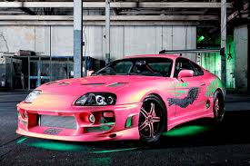
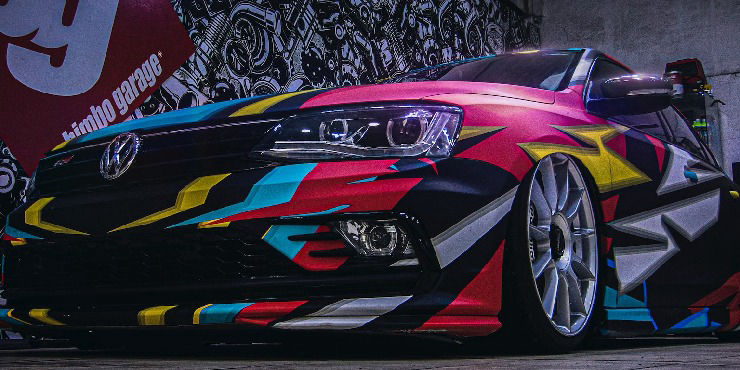
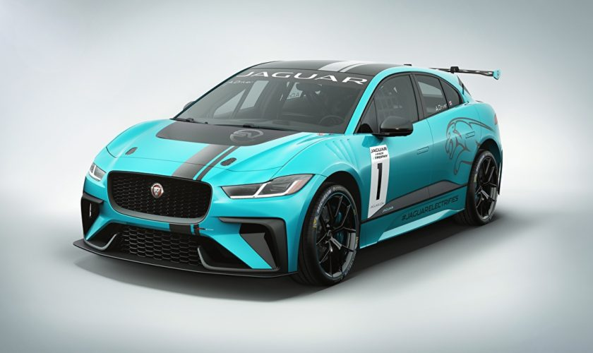
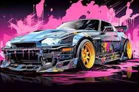

El tuning automotriz consiste en modificar un vehículo para optimizar su rendimiento, estilo o funcionalidad, ya sea en el motor, la suspensión, la estética exterior o el interior. El objetivo es mejorar el desempeño general del vehículo según las necesidades del usuario. Sin embargo, el tuning está sujeto a regulaciones para que el vehículo pueda circular legalmente por la vía pública
Autor:
Raúl Adrián Cano García